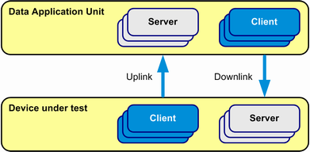
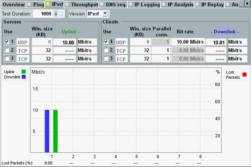
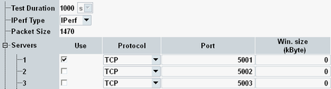
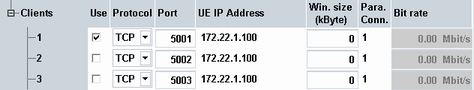

The measurement uses the open source tool iperf to evaluate the throughput and reliability of a connection in uplink and/or downlink direction.
For a measurement, the iperf tool must be running at both ends of a connection. At the end sending data, it is configured as "client" and at the end receiving data, as "server".

The "Iperf" tab allows you to configure up to eight server instances and eight client instances at the DAU in parallel. For configuration of iperf at the DUT side, see "Configuring Iperf on the DUT".
The main view of the "Iperf" tab shows the first three instances together with the main parameters. To display all instances, press the softkey "Expand Table".
The diagram below the instances displays the measurement results.

All instances can be fully configured using the "Iperf Config" dialog, which can be opened via the "Config" hotkey.


The elements of the main view and of the configuration dialog are described below.
- "Uplink": bit rate measured in uplink direction for active server instances
- "Downlink": bit rate transmitted in downlink direction for active client instances
- "Lost Packets": percentage of packets lost during the measurement, for active server instances with protocol type UDP
The uplink and downlink bit rates are also indicated in the instance table above the bar graph. The lost packet percentage is also indicated below the bar graph.
Remote command:Defines the duration of the test.
Remote command:Selects the iperf version to be used, iperf or iperf3.
Iperf3 is not compatible with older versions. Use the same iperf version on the DAU and on the DUT.
Remote command:Defines the packet size for iperf tests (payload bytes), applicable to UDP and TDD.
- Convert the bit rate to byte/s and divide it by an integer number (divisor n) to derive the packet size.
- Use the smallest possible divisor n, resulting in an integer packet size.
- Ensure that the packet size is smaller than or equal to the maximum payload size, resulting from the configured MTU (MTU minus overhead), see also "Maximum Transmission Unit (MTU)". If necessary, use a larger divisor n.
Example:
MTU = 1500 bytes, UDP bit rate = 23 kbit/s = 2875 byte/s
The smallest possible divisor n equals five. It results in a packet size of 575 bytes. This packet size is smaller than the maximum payload size.
With a packet size of 575 bytes, exactly five packets are transferred per second. The resulting bit rate is 5 * 575 byte/s * 8 bit/byte = 23 kbit/s.
Remote command:- "Use"
Specifies whether the server instance is used. - "UDP or TCP"
Selects the protocol type to be used.
This setting is configurable for iperf. For iperf3, it is dynamically set by the client at the other end. - "Port"
Specifies the LAN DAU port number for the connection. This value must match the DUT's client port settings. - "Window size"
Specifies the TCP receiving window size (for TCP only)
This setting is configurable for iperf. For iperf3, it is dynamically set by the client at the other end.
- "Use"
Specifies whether the client instance is used. - "UDP or TCP"
Selects the protocol type to be used. - "Port"
Specifies the LAN DAU port number for the connection. This value must match the DUT's server port settings. - "UE IP Address"
Specifies the IP address of the DUT. - "Window size"
Specifies the size of the NACK window (in kByte), for TCP only. - "Parallel Connections"
Specifies the number of parallel connections for the selected port, for TCP only. - "Bit rate"
Specifies the maximum bit rate to be transferred, for UDP only.
If the bit rate is not reached, check the packet size, see "Packet Size".
Turn the measurement on or off using the [ON | OFF] or [RESTART | STOP] keys. Alternatively, right-click the "Iperf" softkey.
The softkey shows the current measurement state. Additional measurement substates can be retrieved via remote control.
Remote command: